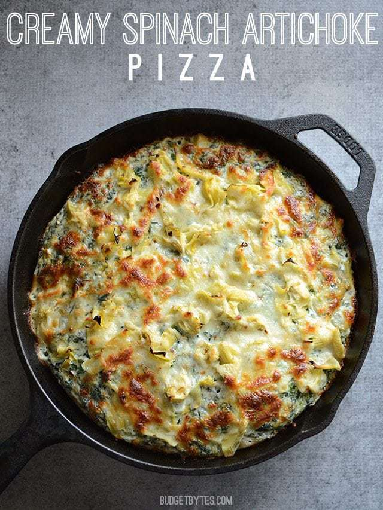

Creamy Spinach Artichoke Pizza Recipe

This is a delicious pizza that replaces the cheese!
- 2 cups all-purpose flour
- 1 tsp sale
- 1/8 tsp instant yeast
- 1 Tbsp olive oil
- 3/4-1 cup water
-
- 1/2 lb. frozen chopped spinach
- 1 Tbsp butter
- 1 clove garlic
- 4 oz. cream cheese
- 1/2 cup milk
- 1/4 tsp salt
- 1 Tbsp cooking oil
- 1/2 15oz. can artichoke hearts
- 1 pinch crushed red pepper (optional)
- 1 cup shredded mozzarella
- Begin the dough the night before. In a large bowl stir together the flour, salt, and yeast. Combine the olive oil and 3/4 cup water,
then pour it into the bowl with the flour. Stir until a single (slightly wet and sticky) ball of dough forms with no dry flour left
on the bottom of the bowl. Add one to two tablespoons more of water, if needed, to form a ball of dough. Loosely cover the dough and
let it sit at room temperature for 12-18 hours.
- The next day let the spinach thaw and then squeeze out as much moisture as possible. Preheat the oven to 450ºF and pour 1 Tbsp of cooking oil into a 10 or 12-inch cast iron skillet.
Spread the oil around the skillet, including up the side walls.
- To make the sauce, mince the garlic and add it to a small pot along with the butter. Sauté the butter and garlic for 1-2 minutes over medium-low heat, or until the garlic is soft and fragrant. Add the cream cheese, milk, and salt to the butter and garlic.
Whisk and cook over medium-low heat until the cream cheese has melted into the milk and a thick sauce forms (3-5 minutes). Finally, stir the squeeze-dried spinach into the sauce, breaking up any clumps as you stir. Remove the sauce from the heat and set aside.
- Use the excess oil from the skillet to coat your hands, then scrape
the fermented dough out of the bowl. Gently press and stretch the loose dough into the skillet until it evenly covers the bottom.
- Spread the creamy spinach sauce over the dough, covering from edge to edge. Drain the artichoke hearts, give them a rough chop,
then sprinkle over the creamy spinach sauce. Add a pinch of red pepper flakes, if desired. Finally, top the pizza with the shredded mozzarella.
- Bake the pizza in the fully preheated oven for 20-25 minutes, or until the edges are sizzling and the top is golden brown. Remove the pizza from the oven and slide a butter knife around the edges to loosen any melted cheese.
ither slide the whole pizza onto a cutting board or carefully slice the pizza in the pan. Cut into six slices and serve.